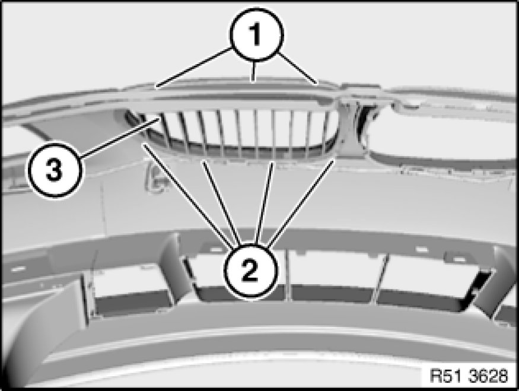

51 13 001 Removing and Installing/Replacing Front Radiator Grille, Middle Left or Right
51 13 001 - Removing and installing/replacing front radiator grille, middle left or right

Necessary preliminary tasks:
- Remove bumper trim

Lever out catches (1) and (2) and remove front grille (3) towards front.
Installation:
All catches and guides on front grille (2) must not be damaged.
Press on chrome ring to push front radiator grille (2) into bumper trim.
Fixtures (1) must engage correctly.

Replacement:
- Replace front radiator grille, middle left or right 51 13 ... Replacing Front Radiator Grill, Middle Left or Right